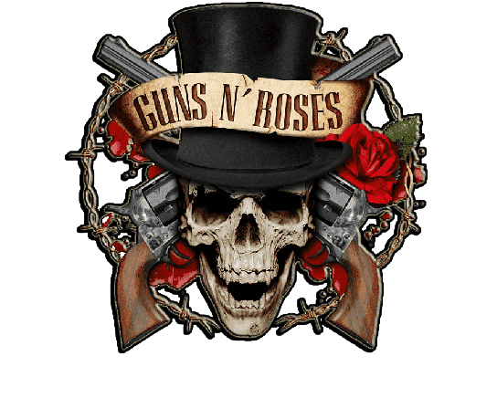

Guns and Roses
Álbumes
Appetite for Destruction
Es el álbum debut de la banda estadounidense de hard rock Guns N' Roses, fue publicado por la compañía discográfica Geffen Records el 21 de julio de 1987, tras su autoeditado Live ?!*@ Like a Suicide. Alcanzó el éxito masivo en todo el mundo de forma explosiva posterior a su lanzamiento. Asimismo, Appetite for Destruction es el álbum debut más vendido en toda la historia musical, con más de 30 millones de copias vendidas en todo el mundo. Debido a su enorme éxito, el álbum logró llegar a la primera posición en las listas Billboard de Estados Unidos donde fue certificado 18 veces disco de platino. El álbum de igual forma, ocupa el puesto número 20 en la lista de Los 500 mejores álbumes de todos los tiempos elaborada por la revista Rolling Stone y el puesto N.º4" en la lista de los 100 mejores álbumes debut de todos los tiempos; calificándolo como el cuarto mejor álbum debut de la historia. El mismo también ha sido nombrado como pilar fundamental en la definición del hard rock en la segunda mitad de los años 1980. «Welcome to the Jungle», «Paradise City», y «Sweet Child o' Mine» son las canciones más reconocidas y que mejor caracterizan a este álbum, las cuales han influenciado la escena de la música popular en los Estados Unidos, además de servir de inspiración a numerosas versiones. Sin embargo, el resto de canciones también lograron éxito e impacto mundial, lo que produjo que literalmente todas las canciones llegaran a niveles de hits mundial.
G N' R Lies
G N' R Lies (también conocido como Lies) es el nombre del segundo álbum de estudio de la banda de hard rock estadounidense Guns N' Roses. Fue lanzado al mercado el 29 de noviembre de 1988. Es el último álbum de la banda con él baterista Steven Adler, qué fue expulsado del grupo en 1990. El álbum en sí, resultó menos intenso en cuanto a contenidos que el primero, aunque no por ello menos controvertido, destacan canciones como «One in a Million», de gran dureza en el contenido de sus letras, lo que ocasionó unos pocos problemas a la banda. El único sencillo que se desprendió del álbum fue «Patience», que alcanzó el puesto #4 en el Billboard Hot 100.
Use Your Illusion I
Use Your Illusion I es el tercer álbum de estudio de la banda estadounidense de hard rock, Guns N' Roses, publicado el 17 de septiembre de 1991, el mismo día que su "álbum gemelo" Use Your Illusion II. Ha vendido alrededor de 17 millones de copias en todo el mundo. Use Your Illusion I debutó en la posición número 1 en las listas del Billboard, y ha sido certificado en Estados Unidos 7 veces con disco de platino; también obtuvo numerosas certificaciones debido a su arrasador éxito en gran parte del resto de países del mundo, algunos de esos países fueron Argentina, Canadá, Reino Unido, Australia, Nueva Zelanda, Alemania, Japón, Islandia, Noruega, etc. En los cuales el álbum alcanzó certificaciones múltiples de disco de oro, platino y diamante. En dichos países el álbum también escaló hasta la primera posición en las respectivas listas musicales. Una de las canciones que componen el álbum es la mítica y exitosa «November Rain» la cual es considera una de las mejores canciones de la historia. El álbum también fue galardonado con un premio Grammy en 1992.
Use Your Illusion II
Use Your Illusion II es el cuarto álbum de estudio de la banda estadounidense de hard rock, Guns N' Roses, caracterizado por ser más melancólico, reflexivo, triste y oscuro que su antecesor Use Your Illusion I y en efecto el álbum más "deprimente" de la banda (por canciones como "Breakdown" o "Estranged"), de hecho fue elegido por la crítica como "el álbum más oscuro y reflexivo de toda la discografía de GNR". Ha vendido cerca de 18 millones de copias alrededor del mundo hasta el momento. El álbum también llegó a la posición N.º 1 en las listas estadounidenses. Dentro del álbum se encuentra "You Could Be Mine" que se convirtió en el tercer sencillo más exitoso y con más ventas de la banda (por detrás de Sweet Child O' Mine y "November Rain")
The Spaghetti Incident?
The Spaghetti Incident? es el quinto álbum de estudio de la banda de hard rock estadounidense Guns N' Roses, grabado entre finales del año 1992 y principios del 1993. El álbum llegó al puesto n.º 3 en la listas de Estados Unidos y consiguió la certificación de doble platino. Debido a la tensa relación entre los integrantes de la banda, el lanzamiento del disco consistió en versiones de canciones de otras bandas y artistas, que de alguna manera fueron de gran influencia para la banda, como el caso de Nazareth, Johnny Thunders, The Damned, The Stooges, UK Subs, T. Rex y The Sex Pistols entre otros. También fue el último trabajo de estudio con parte de la alineación "clásica" de la banda, debido que a la postre la banda se separaría. También es el último trabajo de Axl Rose junto a Slash, que no lograrían recomponer su relación hasta agosto de 2015, 19 años después.
Chinese Democracy
Chinese Democracy es el sexto álbum de estudio de la banda estadounidense de hard rock, Guns N' Roses. El álbum fue lanzado al mercado el 23 de noviembre de 2008 en Estados Unidos. Es el primer disco con temas originales de la banda después del lanzamiento simultáneo del álbum doble Use Your Illusion I y Use Your Illusion II en septiembre de 1991; cuenta con Axl Rose y Dizzy Reed como únicos miembros originales del grupo. Debutó con un tercer puesto en el Billboard 200 y obtuvo la certificación de platino por parte de la RIAA. Ha vendido más de 8 millones de copias alrededor del mundo, el número de ventas fue un logro notable, ya que a finales de 2008 muy poco público compraba discos, y por otro lado también estaba el enorme problema de la piratería. El álbum pasó por un proceso de grabación prolongado, retrasado por problemas legales, personales y el perfeccionismo del vocalista Axl Rose. A mediados de la década de 1990, en medio de diferencias creativas y personales, los guitarristas Slash y Gilby Clarke, el bajista Duff McKagan y el baterista Matt Sorum renunciaron o fueron despedidos. Solo quedaron Rose y el teclista Dizzy Reed. En el regreso oficial de los miembros fundadores Slash y Duff McKagan a la banda, el 8 y 9 de abril de 2016 en Las Vegas, se tocaron tres canciones de este álbum: "Chinese Democracy", "Better" y "This I Love", con los solos improvisados por Slash. El álbum es considerado la producción musical más cara de toda la historia, con un coste total de 13 millones de dólares.
Artistas (originales)
- Axl Rose William Bruce Rose Jr., (Lafayette, Indiana, 6 de febrero de 1962) - [Cantante, líder y compositor de la banda]
- Slash Saul Hudson, (Hampstead, Londres; 23 de julio de 1965) - [Guitarrista principal de la banda] 
- Izzy Stradlin Jeffrey Dean lsbell, (Lafayette, Indiana, 8 de abril de 1962) - [Guitarrista rítmico, compositor principal de la banda]
- Duff McKagan Michael Andrew "Duff" McKagan, (Seattle, Washington, Estados Unidos; 5 de febrero de 1964) - [Bajista y vocalista de la banda]
- Steven Adler Steven Adler Michael Coletti, (Cleveland, Ohio, 22 de enero de 1965) - [Bateria de la banda]